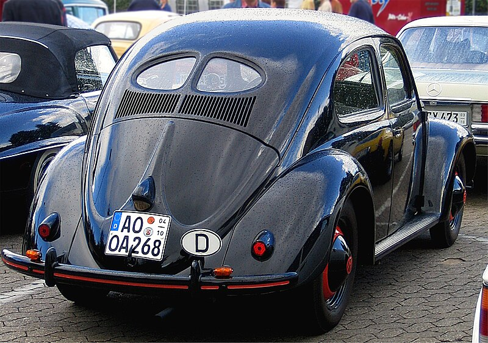
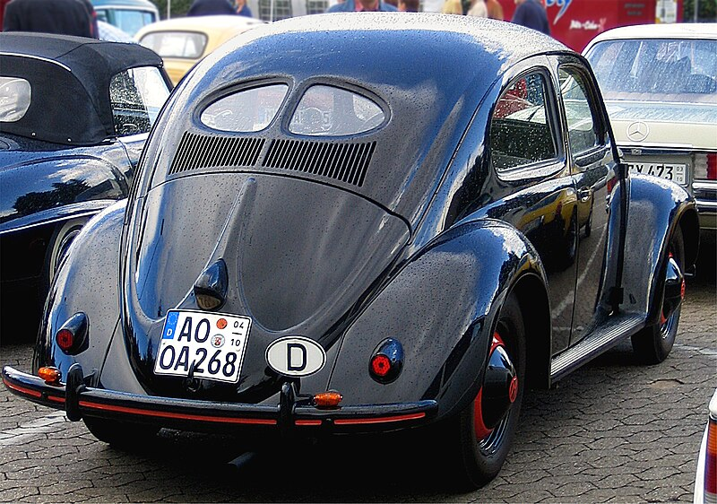
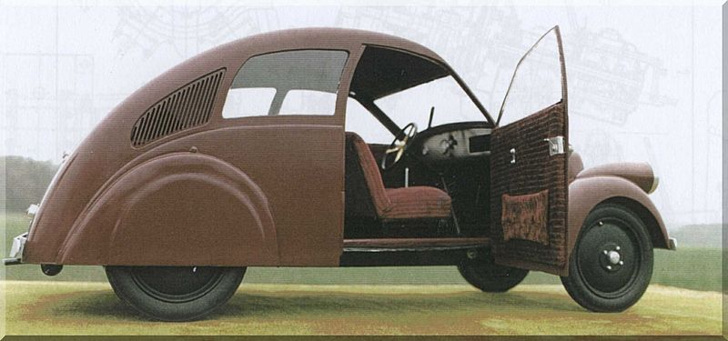
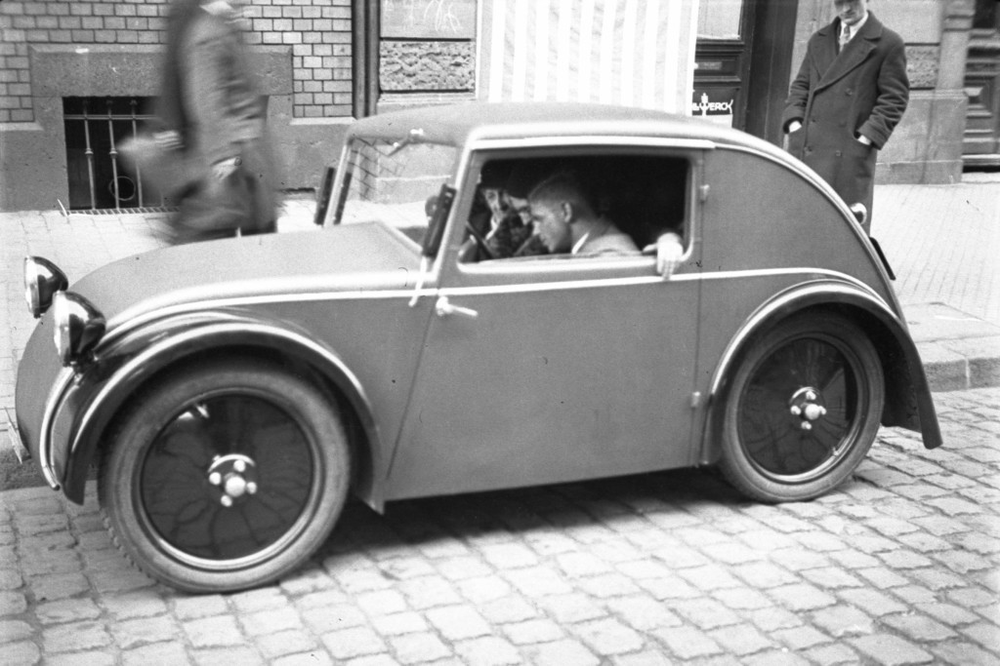

NASCIMENTO
A história do fusca se inicia em 1938, sendo fabricado pela companhia alemã Volkswagen, o Fusca foi o primeiro carro a ser fabricado pela Volkswagen, sendo chamado de Volkswagen Type 1
ORIGEM DO NOME FUSCA
Na verdade, o nome "Fusca" é um apelido que foi dado somente aqui no Brasil, o nome original do veículo é Volkswagen Sedan, porém a abreviação desse nome (VW) soava como fulque ou fulca em alemão. Em outros países o carro é chamado de beetle (Estado Unidos) e Escarabajo (Espanha), pois o design do veículo se assemelha a um "besouro".
PROCESSO DE PRODUÇÃO
O engenheiro por trás da construção do veículo, foi um nome conhecido por muitos, Ferdinand Porsche, um dos responsáveis pela fundação da Porsche que conhecemos hoje. A produção do Fusca contou com um número anormal de protótipos, levando em consideração que a RDA (Assosiação de classe dos fabricantes de carros na Alemanha), estava no encalço da Volkswagen. Juntamente da oposição política, agora a RDA seria a responsável por custear o projeto do Fusca, e ela faria isso atravevés de uma série de testes rigorosos jamais aplicados antes a nenhum outro carro. Embora tenham existido diversos outros problemas envolvidos na produção do fusca, como o tamanho do veículo, o motor que tinha que se adequar ao tamanho mas ainda gerar potência para 100km/h, prazos apertadíssimos, o fusca finalmente saiu, e agradou a todos.
 

O ENVOLVIMENTO DO BIGODINHO
O projetista da Volkswagen, Ferdinand Porsche, recebeu o projeto Fusca como um pedido direto do próprio bigodinho. A idéia original dele na época era que o Fusca fosse projetado para comportar uma família tradicional alemã, um pai, uma mãe e três filhos, e também que tivesse um custo acessível para a família.
PREDECESSORES
Alguns modelos de carros que vieram antes do fusca, serviram de inspiração para o design do mesmo, como por exemplo o Porsche Typ 12 e o Standard Superior
 